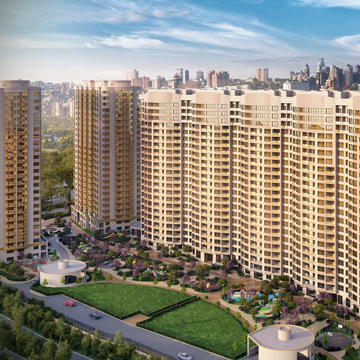

Финансово-промышленная группа «БУДОВА» была основана в 1990 году в г. Одессе. С тех пор небольшой кооператив вырос в одну из ведущих строительных компаний региона.
Идея инновационной строительной компании была заложена основателями фирмы в основу всей деятельности предприятия.
Уже в 90-е годы было очевидно, что строительная сфера в СССР, наряду с определенным потенциалом и некоторыми крепкими традициями,
отстала от ведущих стран мира в сфере использования новых материалов и технологий.
Итогом многолетнего поиска и упорного труда компании «Элитбуд» стала разработка комплексного проектного решения дома
Основав собственное предприятие, профессионалы смогли вырваться
из пут бюрократической системы и самостоятельно определять идеологию, пути развития, алгоритм поиска — и не только с ориентацией на рыночные предложения,
а в тесной связи с отечественной строительной наукой Именно в те годы сложились прочные деловые отношения.

«Инновационный дом» является идеологической и организационно-технологической матрицей при строительстве объектов Впервые в Украине КП «БУДОВА»
начала строить дома с применением туннельной опалубки. По сравнению с классическими методами строительства, данный вид опалубки позволяет значительно
сократить сроки проведения работ — шесть этажей новостройки возводятся в течение месяца, и это не теоретический, а достигнутый на практике КП «БУДОВА» результат.
Многоэтажный жилой дом
«Бельэтаж. Дом на Белинского»
г. Одесса, ул. Белинского,16
Фундаменты свайные с монолитным железобетонным ростверком
Финансово-промышленная группа «БУДОВА» была основана в 1990 году в г. Одессе.
С тех пор небольшой кооператив вырос в одну из ведущих строительных компаний региона. Идея инновационной строительной компании была заложена
основателями фирмы в основу всей деятельности предприятия. Уже в 90-е годы было очевидно, что строительная сфера в СССР, наряду с определенным
потенциалом и некоторыми крепкими традициями, отстала от ведущих стран мира в сфере использования новых материалов и технологий.
Основав собственное предприятие,
профессионалы смогли вырваться из пут бюрократической системы и самостоятельно определять идеологию, пути развития, алгоритм поиска — и не только с ориентацией на
рыночные предложения, а в тесной связи с отечественной строительной наукой Именно в те годы сложились прочные деловые отношения.